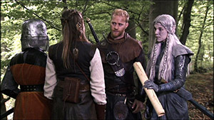

1980
Rollspel
1980 blir internet en arena för spelare. Rollspelet MUD (också kallat Essex MUD eller MUD1) når ut globalt i samband med att Essex Universitet kopplar ihop sitt nätverk med Arpanet. Från och med nu drar en MUD-våg över internet, och allt fler spel lanseras. Multi-User Dungeon är textbaserade och ofta äventyrsspel som utspelar sig i fantasivärldar med påhittade djur och monster. Uppgiften är att ha ihjäl fantasidjuren, utforska och lösa uppgifter. Allt utan bild och ljud.
